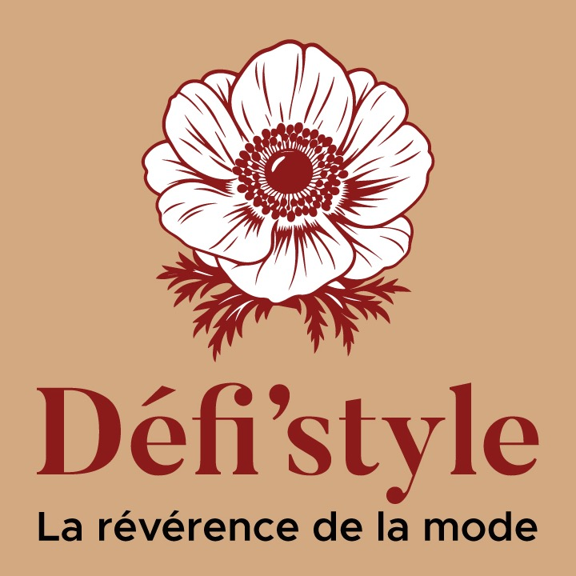

Une scène plus ouverte
Faire de la place.
À Lyon, un groupe de jeunes passionnés imagine des événements accessibles, où le style devient une manière de prendre confiance.
Défi’style, la révérence de la mode
Défilé · Mode · Style · Expression
Défi’style donne de la place à celles et ceux qui font la mode : créateurs, modèles, photographes, stylistes et publics curieux et passionnés.
« Nous ne faisons pas que nous habiller. Nous prenons position. »
La conviction qui nous rassembleGenèse et storytelling
La mode n'est pas réservée à une élite. Elle est un langage universel, une façon de dire qui l'on est sans ouvrir la bouche. Défi’style est né de cette conviction et de l'envie de créer des rendez-vous où chacun peut se montrer sans se déguiser.
On se retrouve pour créer, s’affirmer et partager ce qu’on a de plus humain.
À travers ses défilés, ses événements Dress to Impress et ses actions de transmission, l'association accompagne des personnes qui osent créer, porter et défendre leur propre style.
Une aventure collective
Tout commence avec une question simple : pourquoi les rendez-vous de mode devraient-ils rester difficiles d'accès ?
Une scène plus ouverte
À Lyon, un groupe de jeunes passionnés imagine des événements accessibles, où le style devient une manière de prendre confiance.
Une expérience réelle
Le défilé devient une expérience concrète, un moment pour s'exposer, apprendre et faire entendre sa personnalité.
Une énergie commune
Modèles, créateurs, équipes, partenaires et publics font avancer le projet en partageant la même envie de mouvement.
Les étapes fondatrices
Des premiers questionnements à une association qui grandit à Lyon.
Un groupe de jeunes passionnés se questionne sur la rareté des événements de mode et leur accessibilité.
La première assemblée générale est organisée. Le projet associatif prend forme.
Le premier Dress to Impress est organisé au Cap, à la Maison des étudiants, des jeunes et des associations de Lyon.
Défi’style développe ses rendez-vous et ses collaborations à Lyon.
L'identité
Un nom, une fleur et une phrase pour dire notre rapport à la mode.
Avec ses cinq pétales, l'anémone évoque la protection, la sensibilité, le courage et le renouveau. Elle rappelle qu'une identité peut être délicate sans être fragile, et qu'elle s'ouvre pleinement lorsqu'elle rencontre le mouvement.
Défi’style exprime un grand respect pour la mode et pour les personnes qui la font vivre. Oser le défilé, c'est donner à toutes et tous une occasion de développer leur style, leur confiance et leur voix.
